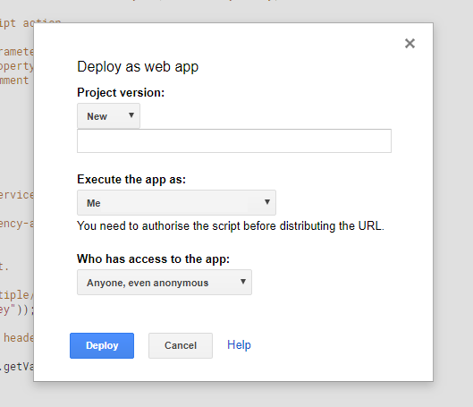

App url (get this when you publish the app)
Usernames (comma separated)
1. Make a copy of this spreadsheet to your own google drive (file -> make a copy)
2. Go to tools -> script editor, you should now see a new tab containing code called "Netrunner Stats"
3. Go to "run" -> "run function" -> "setup"
4. Go to publish -> deploy as web app in the menu of that page which will open a dialog like the below
5. Set "Execute the app as" to "Me" and "Who has access to the app" to "Anyone, even anonymous" then click deploy
6. Click deploy as web app then accept permissions (you may have to go to advanced at the bottom of the sign in during dev)
7. Copy the "web app url" in the resulting pop up and paste it into the above options, along with your username(s) and click save
You should now be good to go, play some test games to make sure everything worked correctly. When a game featuring one of the usernames selected ends a popup should ask you for the name of your deck (this can be whatever you want, it's mainly for stats purposes to differentiate different decks within one ID) and any notes you have on the game. After you've filled those out they should appear in your spreadsheet.